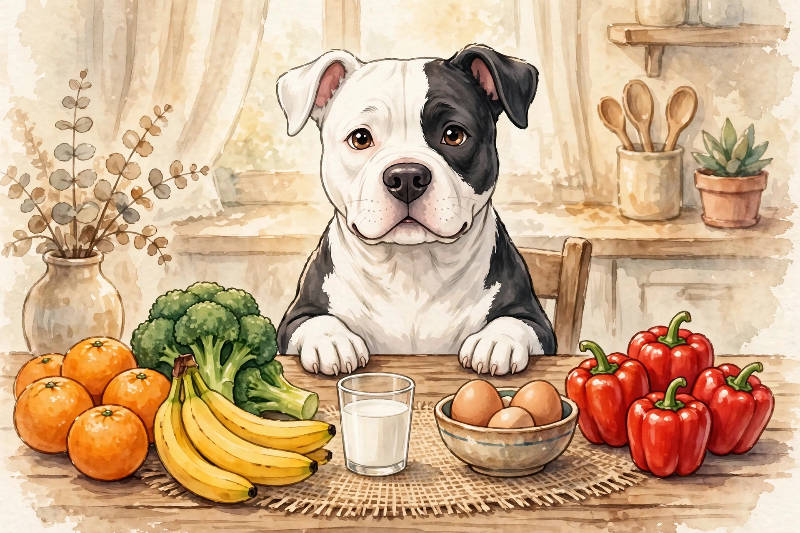
Tap to hear Muffin say hello:
Welcome to my nutrition school! Every food has a tiny helper hiding inside it. Pick a food below and I'll teach you its secret.
Pick a food, and the table will spin its card to you:
Muffin's food for this one: carrots
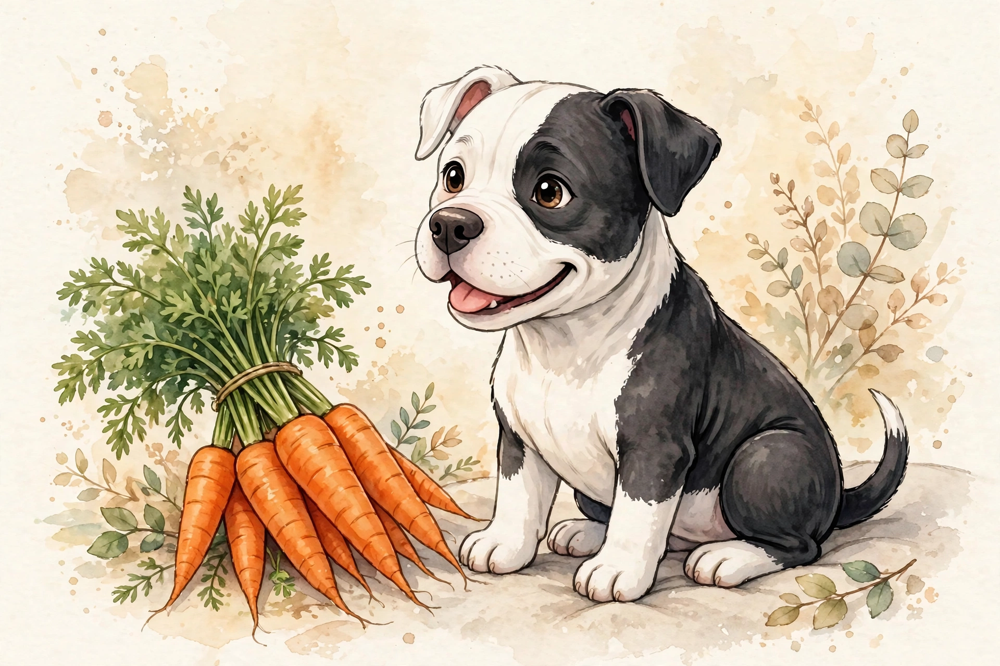
Tap to hear Muffin teach it:
Hi, I'm Muffin. Today let's learn about vitamin A. Can you say it with me.
Vitamin A. Good job. Vitamin A helps your eyes see in the dark, like a superhero night light.
You can find it in carrots, sweet potatoes, and leafy greens. Vitamin A has a buddy called healthy fat, like a little olive oil, and they hold hands to help your body. So crunch a carrot and say hi to vitamin A.
Bye for now!
Muffin's food for this one: whole grain bread
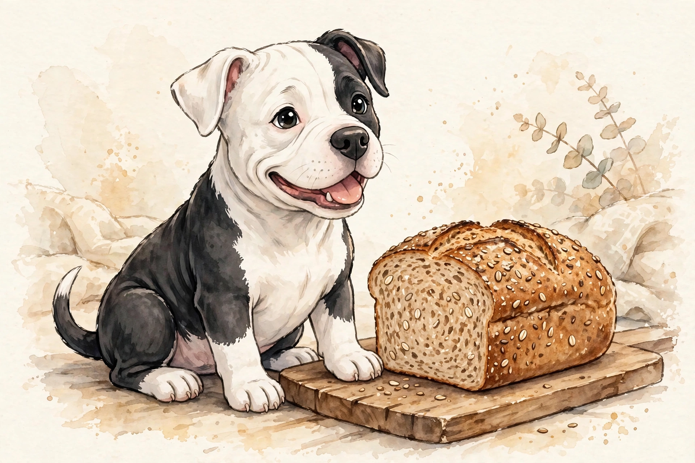
Tap to hear Muffin teach it:
Hi, I'm Muffin. Today it's vitamin B1. Can you say it with me.
Vitamin B1. Great. Vitamin B1 helps turn your food into zoomy energy for playing.
You can find it in whole grain bread, brown rice, and beans. Vitamin B1 has a buddy called magnesium, and they hold hands to help your body. So enjoy your toast and think of vitamin B1.
Bye for now!
Muffin's food for this one: milk
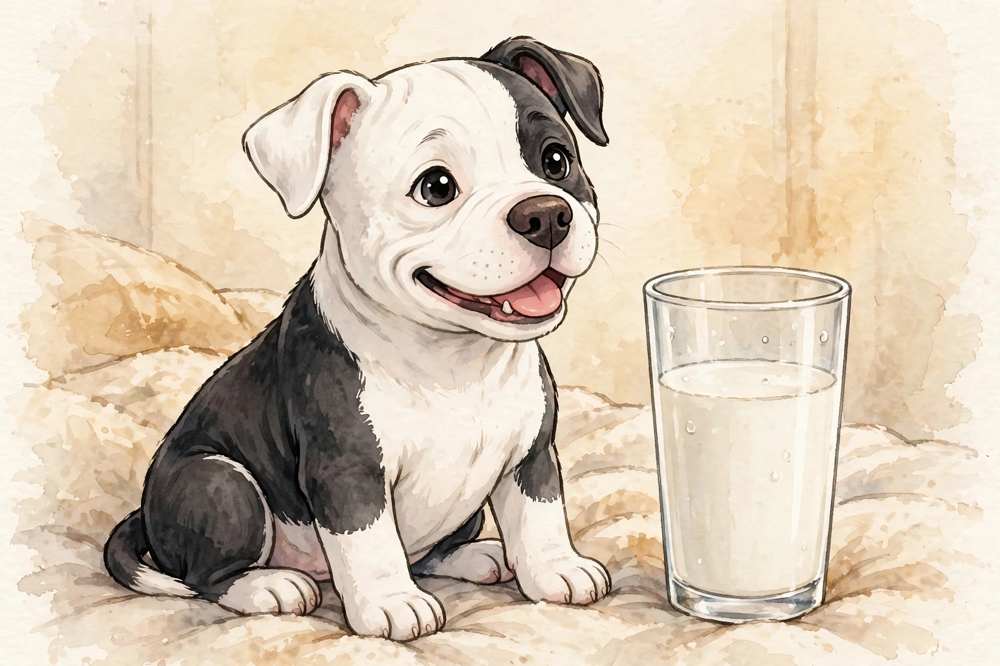
Tap to hear Muffin teach it:
Hi, I'm Muffin. Today it's Vitamin B2. Can you say it with me.
Vitamin B2. Great. Vitamin B2 helps your body make energy from food, so you can run and giggle.
You can find it in milk, yogurt, and eggs. Vitamin B2 has a buddy called vitamin B6, and they hold hands to help your body. So drink your milk and smile.
Bye for now!
Muffin's food for this one: peanuts
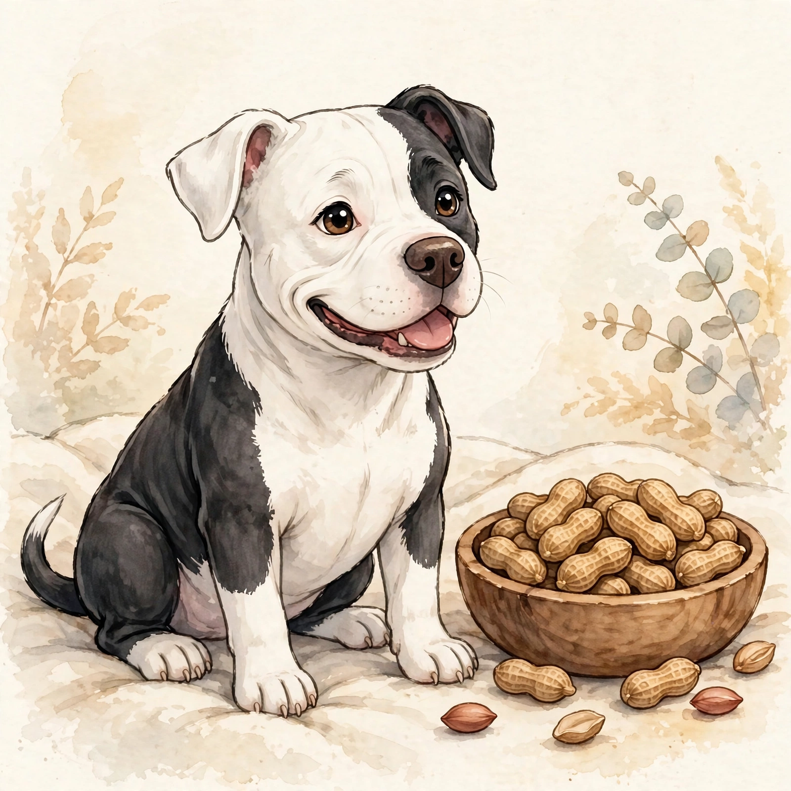
Tap to hear Muffin teach it:
Hi, I'm Muffin. Today we are learning about vitamin B3. Can you say it with me.
Vitamin B3. Great. It helps your body use food for energy and keeps your skin happy.
You can find it in peanuts, chicken, and brown rice. Protein foods are its best buddies, and they hold hands to help your body. So munch a peanut and wave hello.
Bye for now!
Muffin's food for this one: eggs
Tap to hear Muffin teach it:
Hi, I'm Muffin. Today it's Vitamin B5. Can you say it with me.
Vitamin B5. Great. Vitamin B5 helps your body make energy every single day.
You can find it in eggs, chicken, and broccoli. Vitamin B5 has buddies called the B vitamin family, and they all hold hands to help your body. So eat your eggs and feel great.
Bye for now!
Muffin's food for this one: bananas
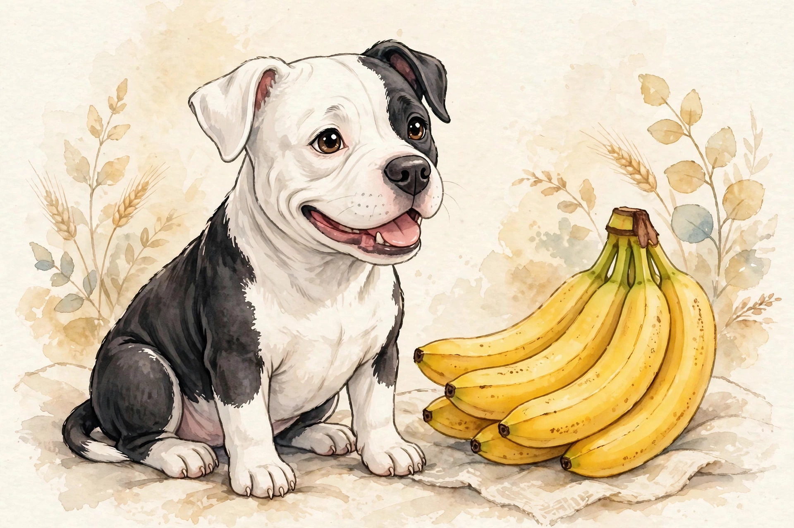
Tap to hear Muffin teach it:
Hi, I'm Muffin. Let's learn about vitamin B6 together. Can you say its name with me.
Vitamin B6. Great. Vitamin B6 helps your brain send happy messages all around your body.
You can find it in bananas, chickpeas, and potatoes. Vitamin B6 has a buddy called magnesium, and they hold hands to help your body. So peel a banana and grin.
Bye for now!
Muffin's food for this one: leafy greens
Tap to hear Muffin teach it:
Hi, I'm Muffin. Today we are learning about vitamin B9. Can you say it with me.
Vitamin B9. Great. This tiny helper makes new cells so you grow big and strong.
You can find it in leafy greens, beans, and lentils. It has a buddy called vitamin B12, and they hold hands to help your body. So eat your greens like a champ.
Bye for now!
Muffin's food for this one: eggs and milk
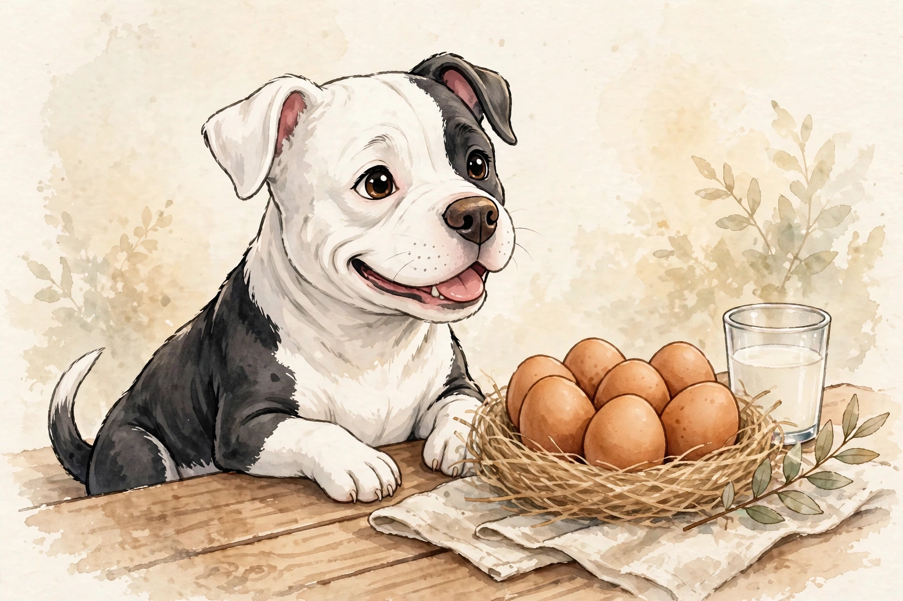
Tap to hear Muffin teach it:
Hi, I'm Muffin. Today we are learning about vitamin B12. Can you say it with me.
Vitamin B12. Great. Vitamin B12 helps your body make healthy blood and keeps your energy up.
You can find it in eggs, milk, and fish. It has a buddy called vitamin B9, and they hold hands to help your body. So enjoy your breakfast and shine.
Bye for now!
Muffin's food for this one: oranges
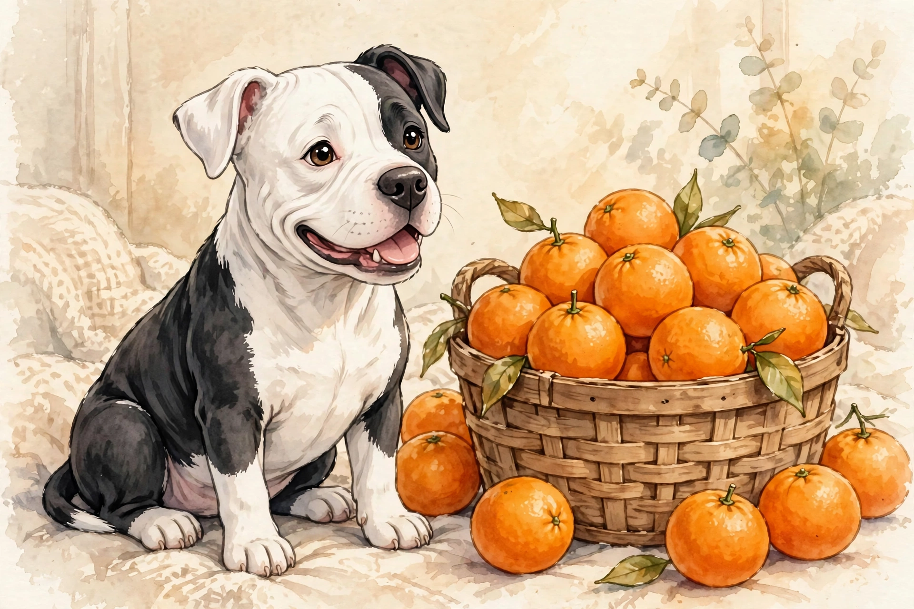
Tap to hear Muffin teach it:
Hi, I'm Muffin. Today I want to tell you about something tiny hiding in your food. It's called vitamin C.
Can you say that with me. Vitamin C. Good job.
Vitamin C helps your body feel strong, and helps little scrapes get all better. You can find it in oranges, strawberries, and yummy red peppers. My favorite is oranges.
They are round and sunny, just like playtime. Vitamin C has a buddy called iron. They hold hands and help your body together.
So when you eat an orange, remember, vitamin C is in there, cheering for you. Bye for now!
Muffin's food for this one: sunshine and milk
Tap to hear Muffin teach it:
Hi, I'm Muffin. Today it's Vitamin D. Can you say it with me.
Vitamin D. Great. Vitamin D helps your bones grow strong and sturdy.
You can find it in warm sunshine on your skin, and in milk and fish too. Vitamin D has a buddy called calcium, and they hold hands to help your body. So play in the sunshine and smile.
Bye for now!
Muffin's food for this one: almonds
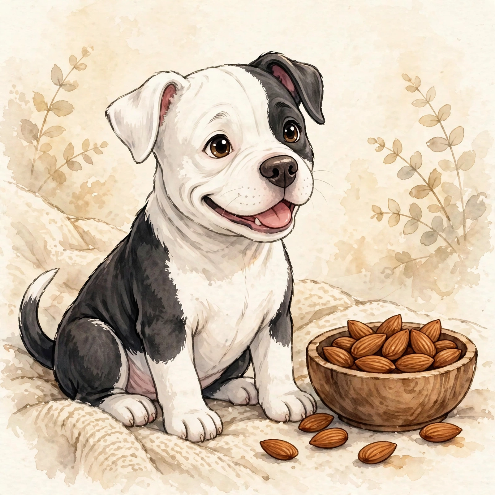
Tap to hear Muffin teach it:
Hi, I'm Muffin. Today it's Vitamin E. Can you say it with me.
Vitamin E. Great. Vitamin E is like a tiny shield that keeps your cells safe.
You can find it in almonds, sunflower seeds, and spinach. Vitamin E has a buddy called vitamin C, and they hold hands to help your body. So crunch some almonds and feel safe.
Bye for now!
Muffin's food for this one: broccoli
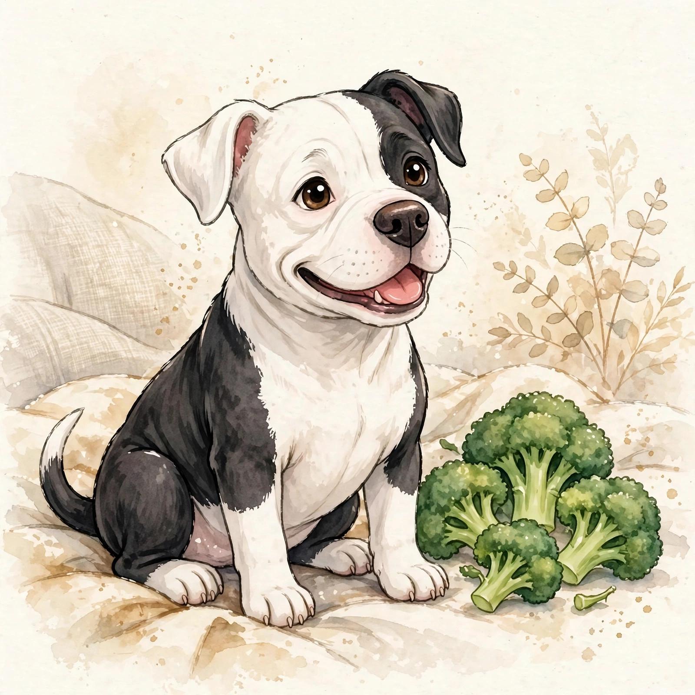
Tap to hear Muffin teach it:
Hi, I'm Muffin. Today we are learning about vitamin K. Can you say it with me.
Vitamin K. Great. Vitamin K helps your body fix little boo-boos and keeps bones strong.
You can find it in broccoli and spinach. It has a buddy called calcium, and they hold hands to help your body. So eat your broccoli trees.
Bye for now!
Muffin's food for this one: milk
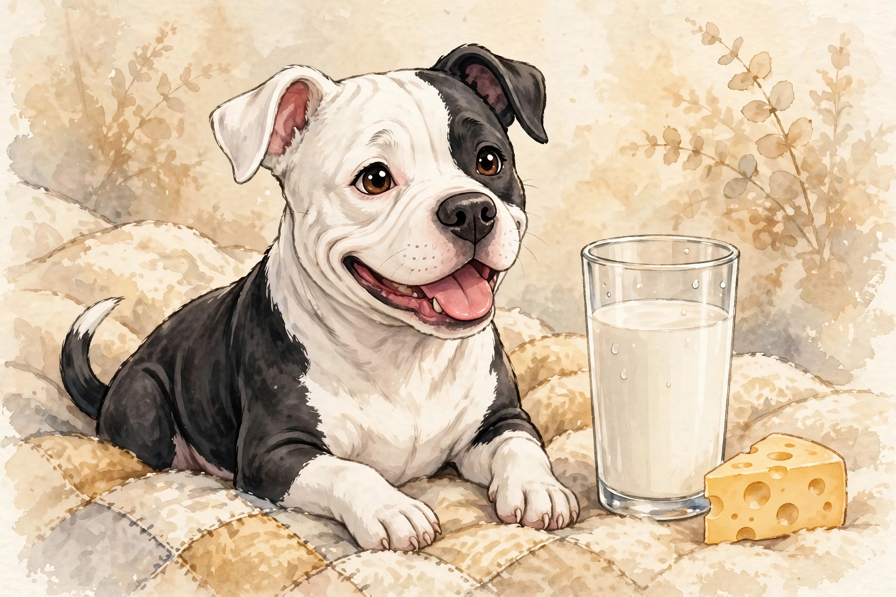
Tap to hear Muffin teach it:
Hi, I'm Muffin. Today it's calcium. Can you say it with me.
Calcium. Great. Calcium builds strong bones and teeth, and helps your muscles move.
You can find it in milk, yogurt, and cheese. Calcium has a buddy called vitamin D, and they hold hands to help your body. So drink your milk and stand tall.
Bye for now!
Muffin's food for this one: celery
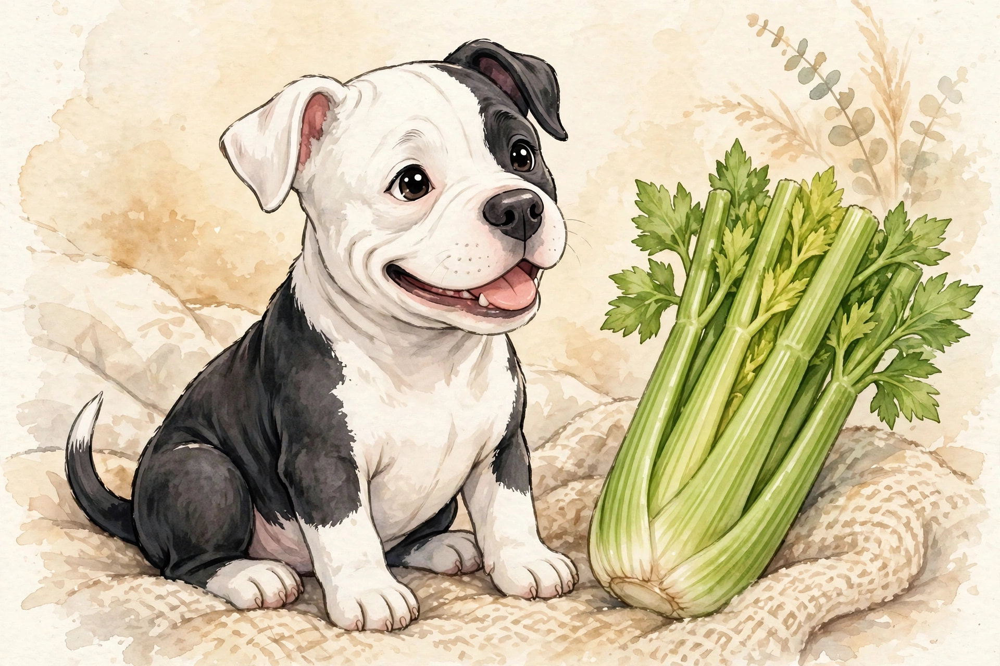
Tap to hear Muffin teach it:
Hi, I'm Muffin. Today it's chloride. Can you say it with me.
Chloride. Great. Chloride helps your body balance its water, just like its buddy.
You can find it in celery, tomatoes, and a tiny pinch of salt. Chloride has a buddy called sodium, and they hold hands to help your body. So crunch your celery and cheer.
Bye for now!
Muffin's food for this one: green beans
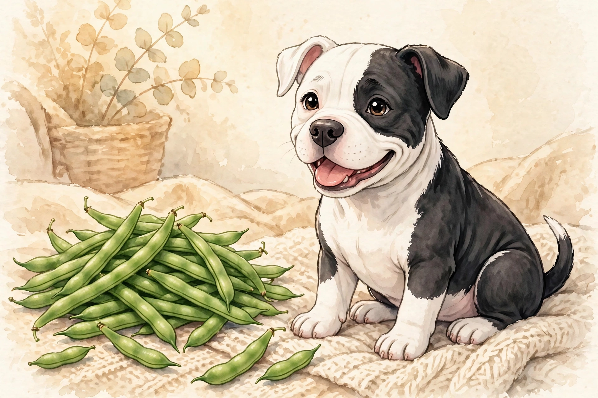
Tap to hear Muffin teach it:
Hi, I'm Muffin. Today it's chromium. Can you say it with me.
Chromium. Great. Chromium is a quiet helper that works with the food you eat.
You can find it in green beans, broccoli, and whole grains. Chromium works quietly with all the other foods on your plate. So eat your green beans and feel clever.
Bye for now!
Muffin's food for this one: sunflower seeds
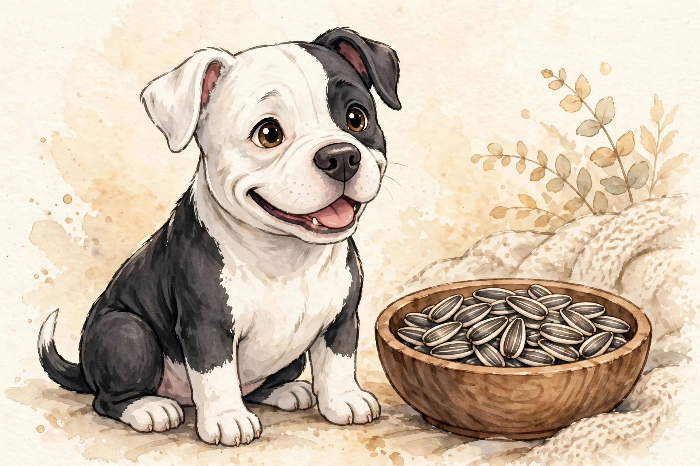
Tap to hear Muffin teach it:
Hi, I'm Muffin. Today it's copper. Can you say it with me.
Copper. Great. Copper helps your body in lots of quiet little ways.
You can find it in sunflower seeds, nuts, and whole grains. Copper has a buddy called zinc, and they hold hands to help your body. So sprinkle some seeds and shine.
Bye for now!
Muffin's food for this one: fish
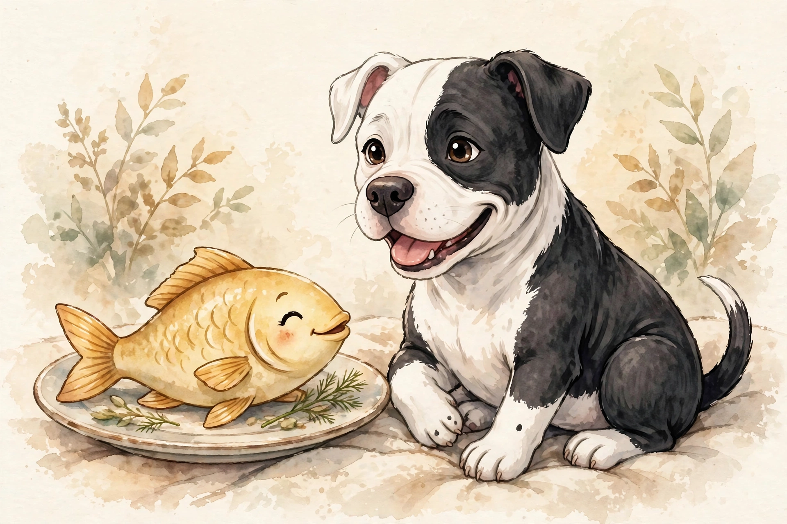
Tap to hear Muffin teach it:
Hi, I'm Muffin. Today it's iodine. Can you say it with me.
Iodine. Great. Iodine helps a tiny gland in your neck keep your body's energy just right.
You can find it in fish, eggs, and dairy. Iodine has a buddy called selenium, and they hold hands to help your body. So enjoy your fish and feel fine.
Bye for now!
Muffin's food for this one: beans
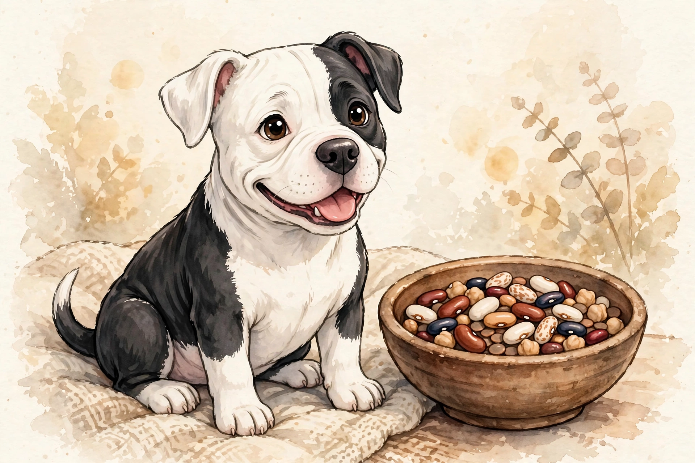
Tap to hear Muffin teach it:
Hi, I'm Muffin. Today it's iron. Can you say it with me.
Iron. Great. Iron helps your blood carry happy air all around your body.
You can find it in beans, lentils, and spinach. Iron has a buddy called vitamin C, and they hold hands to help your body. So eat your beans and feel mighty.
Bye for now!
Muffin's food for this one: pumpkin seeds
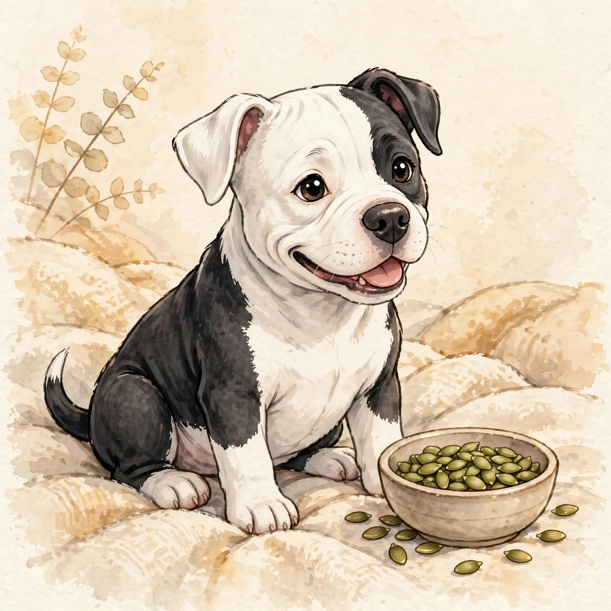
Tap to hear Muffin teach it:
Hi, I'm Muffin. Today it's magnesium. Can you say it with me.
Magnesium. Great. Magnesium helps your muscles relax and keeps you feeling calm.
You can find it in pumpkin seeds, almonds, and leafy greens. Magnesium has a buddy called vitamin D, and they hold hands to help your body. So snack on seeds and relax.
Bye for now!
Muffin's food for this one: oatmeal
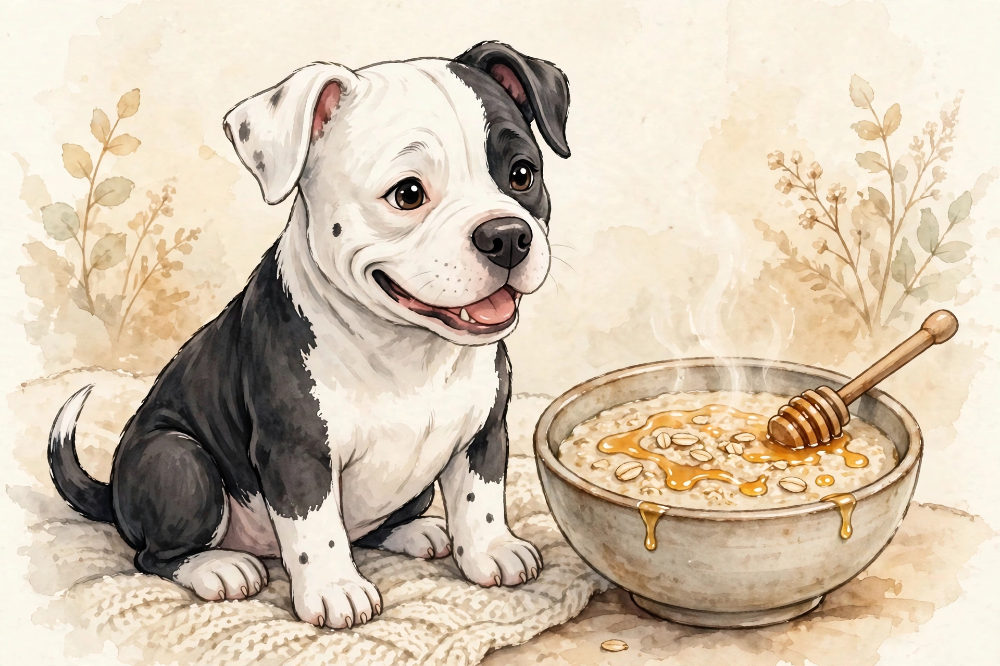
Tap to hear Muffin teach it:
Hi, I'm Muffin. Today it's manganese. Can you say it with me.
Manganese. Great. Manganese is a quiet helper that works inside your body every day.
You can find it in oatmeal, brown rice, and nuts. Manganese works quietly with all the other foods on your plate. So enjoy your oatmeal and start the day.
Bye for now!
Muffin's food for this one: lentils
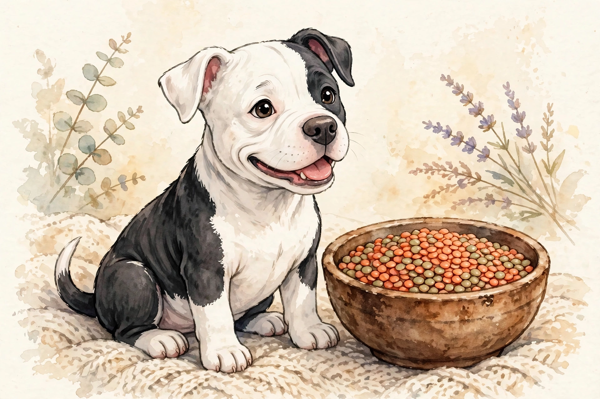
Tap to hear Muffin teach it:
Hi, I'm Muffin. Today it's molybdenum. Can you say it with me.
Molybdenum. Great. Molybdenum is a quiet helper that works inside your body.
You can find it in lentils, beans, and peas. Molybdenum works quietly with all the other foods on your plate. So scoop your lentils and smile.
Bye for now!
Muffin's food for this one: yogurt
Tap to hear Muffin teach it:
Hi, I'm Muffin. Today we are learning about a helper called phosphorus. It sounds like FOSS-fur-us.
Can you say it with me. Phosphorus. Great.
It teams up to build strong bones and teeth. You can find it in yogurt, milk, and beans. It has a buddy called calcium, and they hold hands to help your body.
So spoon your yogurt and smile. Bye for now!
Muffin's food for this one: bananas
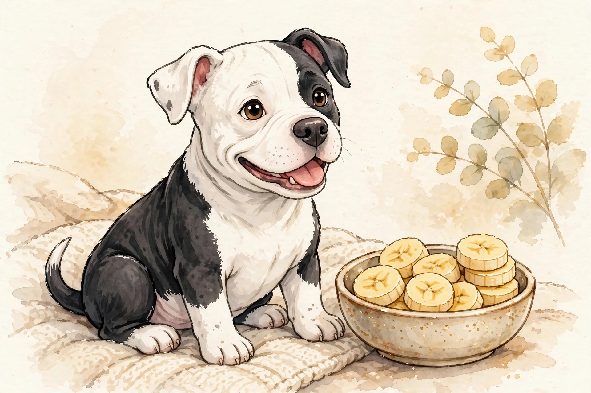
Tap to hear Muffin teach it:
Hi, I'm Muffin. Today it's potassium. Can you say it with me.
Potassium. Great. Potassium helps your muscles move smoothly and keeps your body balanced.
You can find it in bananas, potatoes, and oranges. Potassium has a buddy called sodium, and they hold hands to help your body. So eat a banana and bounce.
Bye for now!
Muffin's food for this one: eggs
Tap to hear Muffin teach it:
Hi, I'm Muffin. Today it's selenium. Can you say it with me.
Selenium. Great. Selenium is a tiny helper that looks after your body every day.
You can find it in eggs, fish, and meat. Selenium has a buddy called iodine, and they hold hands to help your body. A little bit goes a long way.
Bye for now!
Muffin's food for this one: a tiny pinch of salt
Tap to hear Muffin teach it:
Hi, I'm Muffin. Today it's sodium. Can you say it with me.
Sodium. Great. Sodium helps your body balance its water and keeps muscles working.
You can find a tiny bit in salt and in foods like celery. Sodium has a buddy called potassium, and they hold hands to help your body. Just a tiny pinch is plenty.
Bye for now!
Muffin's food for this one: chickpeas
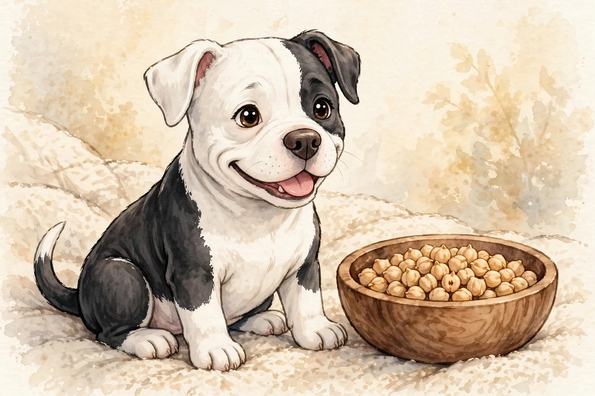
Tap to hear Muffin teach it:
Hi, I'm Muffin. Today it's zinc. Can you say it with me.
Zinc. Great. Zinc helps your body stay healthy and helps owies heal.
You can find it in chickpeas, meat, and nuts. Zinc has a buddy called copper, and they hold hands to help your body. So munch chickpeas and stay zingy.
Bye for now!